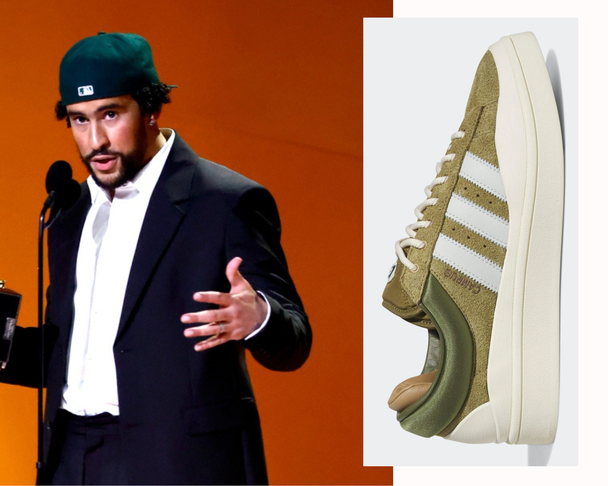
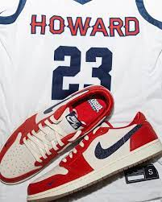

Inicio / Novedades
AIR JORDAN x TRAVIS SCOTT
travis novedadLas Air Jordan 1 x Travis Scott “Olive” podrían ser las últimas zapatillas de una de las colaboraciones más exitosas en los últimos años, la que ha unido a Nike con el rapero de Houston. Con una mezcla de "Sail/University Red/Black/Medium Olive", las Air Jordan 1 x Travis Scott “Olive” cuentan con una base superior de ante negro acentuada por superposiciones de cuero blanco roto. Aparte de los Swooshes invertidos en tono "Medium Olive" y los Swooshes tradicionales en la zona del mediopié, la marca adicional viene en forma de etiquetas en la lengüeta, bordados en la parte trasera y plantillas impresas. El diseño de la zapatilla se completa con la entresuela "Sail" y la suela de goma color oliva
ADIDAS CAMPUS LIGHT "Olive" de Bad Bunny
badbunny novedadEn esta ocasión, nos encontramos con una bota de gamuza “Olive” claro, que va acompañada de un talón acolchado cubierto de tejido satinado en un verde más oscuro que contrasta a la perfección con el interior marrón y las dobles lengüetas oliva oscuro (con el logo de Bad Bunny sobre ellas como siempre). Además, por si fuera poco, las tres bandas laterales destacan en blanco y los cordones en un crema como el de los guardabarros y la mediasuela.Si no pudiste hacerte con las “Cloud White” o querías algo más de color, las adidas Campus Light “Olive” de Bad Bunny serán tu próxima oportunidad para hacerte con la nueva colaboración del artista puertorriqueño y la marca deportiva alemana
AIR JORDAN LOW "HOWARD UNIVERSITY"
nike novedad Air Jordan 1 Low "Howard University" PE. La Universidad de Howard ha presentado la colaboración entre Jordan y los Bison, el equipo deportivo de la institución, que ha dado como resultado unas nuevas AJ1 Low. Estas zapatillas lucen los tres colores principales de los Howard Bison: azul, blanco y rojo. La base de cuero blanco se combina así con unas superposiciones rojas de gamuza y un Swoosh azul de piel texturizada que parece más bien cubierta de pequeñas gemas que podrían brillar con luz propia
